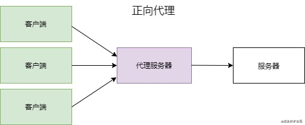
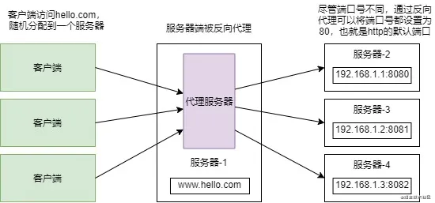
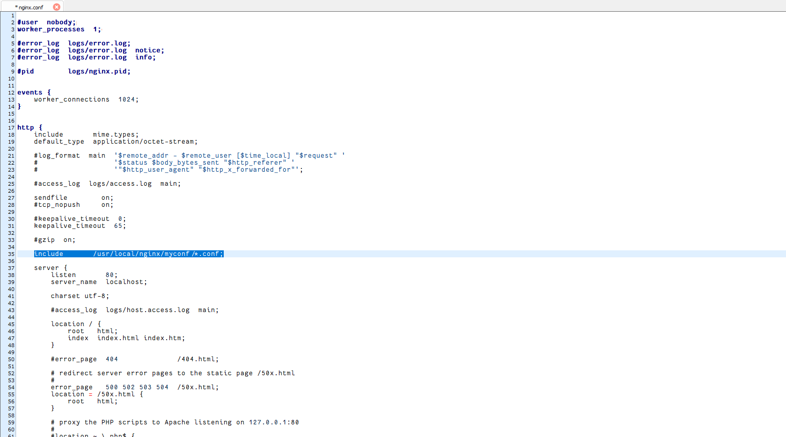
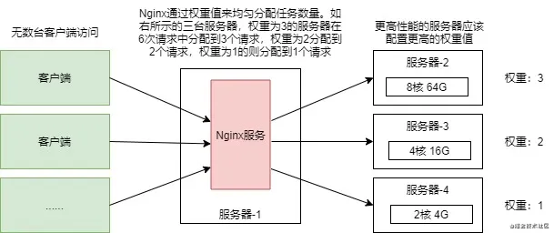
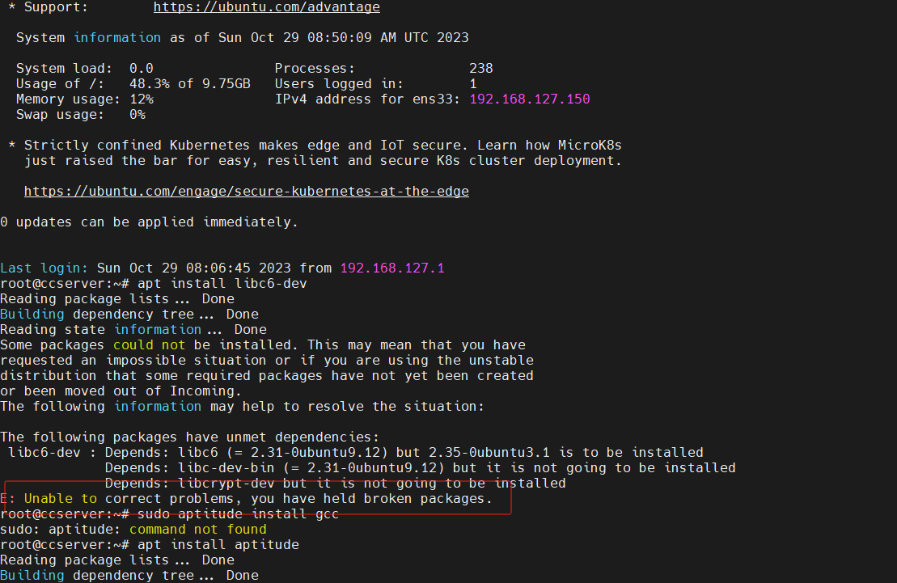

Nginx配置文件¶
1. Nginx基本介绍¶
Nginx是一个高性能的HTTP和反向代理web服务器，同时也提供了IMAP/POP3/SMTP服务。
Nginx是由伊戈尔·赛索耶夫为俄罗斯访问量第二的http://Rambler.ru站点（俄文：Рамблер）开发的，第一个公开版本0.1.0发布于2004年10月4日。 其将源代码以类BSD许可证的形式发布，因它的稳定性、丰富的功能集、示例配置文件和低系统资源的消耗而闻名。
2011年6月1日，nginx 1.0.4发布。 Nginx是一款轻量级的Web 服务器/反向代理服务器及电子邮件（IMAP/POP3）代理服务器，在BSD-like 协议下发行。其特点是占有内存少，并发能力强，事实上nginx的并发能力在同类型的网页服务器中表现较好，中国大陆使用nginx网站用户有：百度、京东、新浪、网易、腾讯、淘宝等。
2. 为什么要使用Nginx¶
随着当今互联网的迅速发展，单点服务器早已无法承载上万个乃至数十万个用户的持续访问。
比如一台Tomcat服务器在理想状态下只能够可以承受住2000个左右的并发量，为了解决这个问题，就需要多台Tomcat服务器来进行负载均衡。
那么，应该如何实现负载均衡？Nginx就是其中的一种解决方案，当用户访问网站时，Nginx拦截到这个访问请求，并将其通过轮询的方式均匀地分配到不同的服务器上。

并且，在Nginx中有一种ip_hash策略，它可以获取到用户的真实IP，计算出hash值来选择服务器，这也是一种优秀的负载均衡方式。 所以，掌握Nginx成为了Web开发学习道路上不可缺少的一部分。
3. 什么是正向代理？¶
正向代理，就是客户端将自己的请求率先发给代理服务器，通过代理服务器将请求转发给服务器。我们常用的VPN就是一种代理服务器，为了可以连上国外的网站，客户端需要使用一个可以连接外网的服务器作为代理，并且客户端能够连接上该代理服务器。

4.什么是反向代理？¶
反向代理与正向代理不同，正向代理是代理了客户端，而反向代理则是代理服务器端。在有多台服务器分布的情况下，为了能让客户端访问到的IP地址都为同一个网站，就需要使用反向代理。

5.linux编译安装Nginx¶
下载最新版本压缩文件：http://nginx.org/en/download.html
# 上传至/usr/local
cd /usr/local
tar -zxvf nginx-1.24.0.tar.gz
cd nginx-1.24.0
./configure --prefix=/usr/local/nginx
make && make install
6.Nginx常用命令¶
# 进程查看
ps -ef | grep nginx
# 含有nginx字符串的全部进程强制关闭
pgrep -f nginx | xargs kill -9
# 直接停止nginx
/usr/local/nginx/sbin/nginx -s stop
# 处理完全部存在的请求，再关闭
/usr/local/nginx/sbin/nginx -s quit
# 配置文件检查
/usr/local/nginx/sbin/nginx -t
# 重新加载配置且启动
/usr/local/nginx/sbin/nginx -s reload
# 默认文件启动
/usr/local/nginx/sbin/nginx
# 指定文件启动
/usr/local/nginx/sbin/nginx -c /usr/local/nginx/conf/nginx.conf
7.支持配置多路径配置文件¶
include /usr/local/nginx/myconf/*.conf;

8. 反向代理多台服务器¶
配置第7点之后，可以在自定义配置文件这样写即可：
upstream myservers{
server 127.0.0.1:8080;
server 127.0.0.1:8081;
server 127.0.0.1:8082;
}
location / {
root html;
index index.html index.htm;
proxy_pass http://myservers;
}
9. Nginx负载均衡配置¶
由于不同服务器的配置不同，为了让性能高的服务器分配到更多的请求，便引入了负载均衡的概念。
前面提到过，Nginx的负载均衡方式可以有很多种，如加权轮询(默认)、IP哈希、url哈希等等，这里就以加权轮询作为介绍。
加权轮询，也就是通过给服务器添加各自的权重值，Nginx通过权重来进行请求的分配，权重越高接收到的请求数量越多，反之越少：

上图配置了三台服务器，在加权轮询的模式下，6次不同的请求中，权重为3的服务器将会分配到3次请求，权重为2的服务器会分配到2个请求，权重为1的服务器则会分配到1个请求。负载均衡大大减少了在高并发的环境下服务器宕机的风险！
upstream myservers{
server 127.0.0.1:8080 weight=3;
server 127.0.0.1:8081 weight=1;
server 127.0.0.1:8082 weight=1;
}
location / {
root html;
index index.html index.htm;
proxy_pass http://myservers;
}
10. Linux（ubuntu）编译安装nginx¶
# 安装编译依赖
apt-get install build-essential
apt-get install libpcre3 libpcre3-dev zlib1g zlib1g-dev openssl openssl libssl-dev
# 创建专用于nginx运行的用户，且做相关配置（-r 建立系统账号；-s 登录系统后默认使用的shell）
useradd -r -s /sbin/nologin nginx
# 编译安装设置用户/用户组/依赖状态统计模块/配置https依赖ssl模块
./configure --prefix==/usr/local/nginx --user=nginx --group=nginx --with-http_stub_status_module --with-http_ssl_module
ubuntu编译安装报错，aptitude工具解决参考：http://www.cnblogs.com/aaron-agu/p/8862624.html

aptitude install libpcre3-dev
经过解决，最好发现是源的问题，一定要搜索对应ubuntu发行版本号的清华源。
一次性安装基础依赖库：
apt-get install build-essential
nginx配置目录开启浏览：
location / {
root /data;
autoindex on; # 开启目录浏览功能；
autoindex_exact_size off; # 关闭详细文件大小统计，让文件大小显示MB，GB单位，默认为b；
autoindex_localtime on; # 开启以服务器本地时区显示文件修改日期！
}
11. 同步/异步/阻塞/非阻塞概念¶
同步阻塞（apache）：小明一直盯着下载进度条，到 100% 的时候就完成。 - 同步体现在：等待下载完成通知。 - 阻塞体现在：等待下载完成通知过程中，不能做其他任务处理。
同步非阻塞：小明提交下载任务后就去干别的，每过一段时间就去瞄一眼进度条，看到 100% 就完成。 - 同步体现在：等待下载完成通知。 - 非阻塞体现在：等待下载完成通知过程中，去干别的任务了，只是时不时会瞄一眼进度条。【小明必须要在两个任务间切换，关注下载进度】
异步阻塞：小明换了个有下载完成通知功能的软件，下载完成就“叮”一声。不过小明不做别的事，仍然一直等待“叮”的声音。 - 异步体现在：下载完成“叮”一声通知。 - 阻塞体现在：等待下载完成“叮”一声通知过程中，不能做其他任务处理。
异步非阻塞（nginx）：仍然是那个会“叮”一声的下载软件，小明提交下载任务后就去干别的，听到“叮”的一声就知道完成了。 - 异步体现在：下载完成“叮”一声通知。 - 非阻塞体现在：等待下载完成“叮”一声通知过程中，去干别的任务了，只需要接收“叮”声通知即可。【软件处理下载任务，小明处理其他任务，不需关注进度，只需接收软件“叮”声通知，即可】
也就是说，同步/异步是“下载完成消息”通知的方式（机制），而阻塞/非阻塞则是在等待“下载完成消息”通知过程中的状态（能不能干其他任务），在不同的场景下，同步/异步、阻塞/非阻塞的四种组合都有应用。
所以，综上所述，同步和异步仅仅是关注的消息如何通知的机制，而阻塞与非阻塞关注的是等待消息通知时的状态。也就是说，同步的情况下，是由处理消息者自己去等待消息是否被触发，而异步的情况下是由触发机制来通知处理消息者，所以在异步机制中，处理消息者和触发机制之间就需要一个连接的桥梁。在小明的例子中，这个桥梁就是软件“叮”的声音。
传统的服务器（apache）采用的都是同步阻塞模型实现，一个process负责一个request，直至会话结束；而计算机支持的process是有限的，进程数越多，系统调度开销就会越大，因此无法支持高并发！
而nginx采用异步非阻塞模型实现，支持高并发，其中多路复用epoll模型，即当有事件产生的时候，epoll会告诉进程哪个连接有I/O事件产生，然后进程就会去处理这个事件。
异步非阻塞方式运行，轻松处理百万级的并发连接，nginx配置epoll：
#定义nginx运行的用户和用户组
#user nobody;
#查看cpu逻辑核心数：cat /proc/cpuinfo |grep "processor"|wc -l
#双核CPU（决定几位数）/4个工作进程
worker_processes 2;
worker_cpu_affinity 01 10;
#四核CPU/4个工作进程
#worker_processes 4;
#worker_cpu_affinity 0001 0010 0100 1000;
#工作模式与连接数上限
events {
# 异步非阻塞方式运行，轻松处理百万级的并发连接
use epoll;
#单个进程最大连接数（最大连接数=连接数*进程数）
worker_connections 2048;
}
#设定http服务器
http {
... ...
}